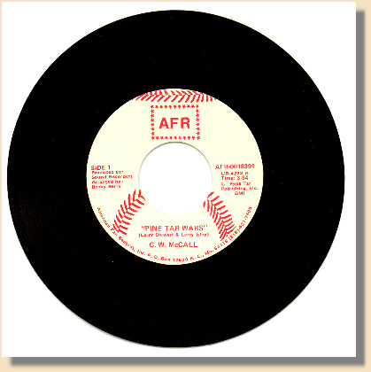

|
Judgin' by the tone of this tune, and considerin' it's on a label outta KC, I'd say this little ditty was written by some Kansas City Royals fans, shortly after the infamous George Brett pine tar on the bat controversy. The "Tar Baby Billy" refered to in the song is Yankees manager Billy Martin. Not bein' a baseball afficionado (The better half had to tell me who Billy was, and what the teams were), that's about all I know about it. Accordin' to Bradyn Breon-Drish, the fella I got the record from, the incident itself happened on July 24th, 1983. So this must a come out in '83 or '84.
If anybody knows anything else about this this little gem, please shoot me an E, and fill me in. |
|
 "Pine Tar Wars"(Larry Stewart & Larry Isley) C.W. McCall Side 1 Produced By: Sound Recorders Arranged By: Becky Berry AFR-0018391 UR-4233 A Time: 3:34 (P) Pyne Tar Publishing Inc. BMI American Fan Records Inc. P.O. Box 12600 K.C. Mo. 64116 (816) 421-7400 |
|
Well the Wall Street Journal, and The New York Times,
carried the story in big headlines, How Kansas City George was robbed that day, When Tar Baby Billy took his bat away They was two men out, in the top of the ninth, It was one of them classic settin's The Goose on the mound, in that Big Apple town, And George is up there battin' As the crowd chants "Goose", he turns it loose, With fire and smoke and ash George sends it deep, in the right field seats, Another timely crash As he rounded third, and he headed on home, Was a gleam in Billy's eye Dick wondered "What's he up to now?", I know this guy's real sly Billy grabbed the bat, as both teams sat, In awe, upon their benches Says there y'are, that there's Pine Tar, An' it's a whole lot more 'en eighteen inches Tar Baby Billy can you hear our song, Did you cry about the game last night? Cry Baby Billy tell us all what's wrong, All you wanna do is fight Y'er like a child kickin' dirt on the Umpire's shoes, It's the way you've always been So now we're gonna take that Pine Tar rag, And rub it in y'er face again So Tim thought it through, and he asked the crew, Then with bat in hand he shouted Y'er out, the home run just don't count, I'm gonna have to disallow it Well the sky was clear, and the day was hot, But George was even hotter Till Lee got wise, and says "Hey You guys, His claim ain't a gonna hold water" Well Tar Baby Billy can you hear our song, Did you cry about the game last night? Cry Baby Billy tell us all what's wrong, All you wanna do is fight Y'er like a child kickin' dirt on the Umpire's shoes, It's the way you've always been So now we're gonna take that Pine Tar rag, And rub it in y'er face again Well the fans was riled, and suits was filed, To cre-ate a long deelay And Billy's team, apparently, Was just afraid to play Now the stage was set, and Billy bet, That he had the upper hand But Billy was fooled when the high court ruled, "You gonna play this game as planned" Well Tar Baby Billy can you hear our song, Did you cry about the game last night? Cry Baby Billy tell us all what's wrong, All you wanna do is fight Y'er like a child kickin' dirt on the Umpire's shoes, It's the way you've always been So now we're gonna take that Pine Tar rag, And rub it in y'er face again With affadavits notarized, That George had touched 'em all The Umpire said we a step ahead, Gonna put an end to Billy Ball We done heard the call, for Billy Ball, We ain't a gonna hear it again Just like the cheer, for Billy's Beer, When the Democrats was in Now the game they played, that summer day, Won't be famous for the scores But the incidents, that have happened since Will be remembered as "Tar Wars" Well Tar Baby Billy can you hear our song, Did you cry about the game last night? Cry Baby Billy tell us all what's wrong, All you wanna do is fight Y'er like a child kickin' dirt on the Umpire's shoes, It's the way you've always been So now we're gonna take that Pine Tar rag, And rub it in y'er face again |

This Web page is hosted by: Mark L. Evans
Written and maintained by: Miles A. Lumbard
Send Comments to:Miles A. Lumbard